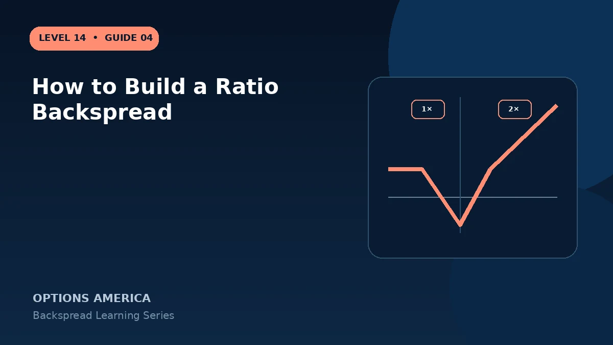

Build a call or put backspread by defining the extreme-move thesis, selecting strikes, choosing the ratio and controlling the net price.
Define direction and catalyst
Choose call options for a large upside thesis or puts for a large downside thesis. Identify the catalyst, expected timing and move size that could carry price beyond the upper or lower breakeven.
Choose the short strike
The short option provides financing but creates assignment and intermediate-price risk. Its strike should relate to current price and the point where the forecast begins.
Choose long strike and ratio
Buy more contracts farther OTM, commonly two for every one sold. Wider strike distance may lower cost but enlarges the loss valley and requires a bigger move.
Enter as one order
Use a ratio-spread limit order and verify signed quantities carefully. Record the maximum loss, both relevant breakevens, margin treatment, assignment plan and exit rules.
A practical example
For an earnings upside thesis, a trader sells one 100 call and buys two 110 calls. Before entry, the trader models the maximum loss at $110 and the rally needed for recovery.
This simplified example focuses on selected expiration outcomes; live prices and risks will differ. Live option prices also reflect the underlying price, time decay, rates, dividends, liquidity and transaction costs. Greeks are theoretical estimates, not guarantees.
Turn the payoff into a trading plan
Before entering how to build a ratio backspread, write down the stock price, both strikes, expiration, contract ratio and total opening credit or debit. Then calculate the quiet-side result, maximum loss at the long-option strike and the far-move breakeven. These three checkpoints make the position easier to monitor and help prevent the attractive tail payoff from hiding the loss valley.
Test at least five scenarios: no move, a move to the short strike, a move to the long strike, a move to breakeven and a move well beyond breakeven. Repeat the exercise with implied volatility higher and lower and with less time remaining. The resulting range is more useful than a single payoff line because a live backspread can change substantially before expiration.
Finally, define the catalyst, maximum acceptable loss, review date and closing method in advance. Use one multi-leg order whenever possible, confirm every fill and recalculate the remaining position before changing any leg. Assignment, liquidity and transaction costs belong in the plan even when the expiration loss appears defined.
Frequently asked questions
Is 1-by-2 mandatory?
No, but other ratios change exposure and risk.
Why not leg into it?
A partial fill can leave an uncovered short option.
What should be calculated first?
The maximum loss zone and breakevens.
Continue the Backspread Strategies cluster
Explore related guides: Ratio Backspread Profit, Loss and Breakevens · Backspread Expiration and DTE Selection · Theta and Time Decay in a Backspread. For a structured sequence, use the free Level 14 – Backspread course.
Options involve risk and are not suitable for every investor. This material is educational and is not investment, tax or legal advice. Greeks are theoretical estimates, and contract terms and broker requirements can vary.